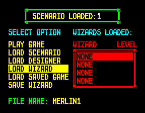
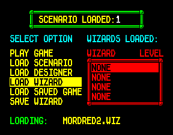
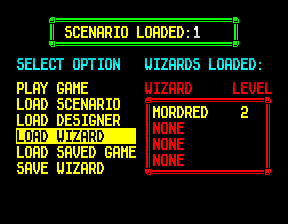
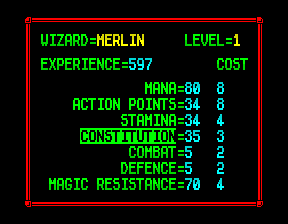
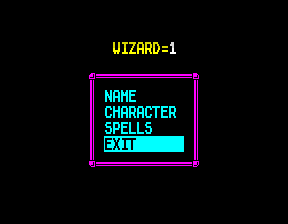
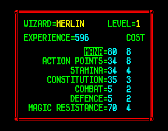
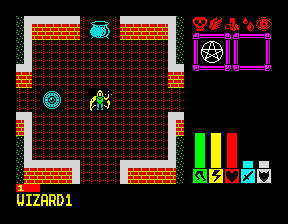

<meta charset="utf-8">
<meta name="viewport" content="width=device-width, initial-scale=1">
<title>{{title}}</title>
<link rel="preconnect" href="https://fonts.googleapis.com">
<link rel="stylesheet" href="https://fonts.googleapis.com/css2?family=Lato:wght@400;700;900&family=IBM+Plex+Mono:wght@400;500&display=swap">
<style>
:root{
  --bg:#23262d; --paper:#e9e7e1; --surface:#ffffff; --surface-2:#f1efea; --line:#d5d3cc; --line-soft:#e0ded8;
  --ink:#2f3136; --ink-soft:#55585f; --ink-mute:#80838a;
  --link:#1f5fa8; --link-hover:#154480; --accent:#1f5fa8;
  --amber:#c25a00; --cyan:#1f5fa8; --coral:#d04a3a; --green:#2a8a4a; --violet:#4a5bd6; --hl:#fff0c2;
  --chip:#2f3136; --chip-ink:#ffffff;
  --c64blue:#40318d; --c64grey:#686868;
  --fd:'Lato',system-ui,sans-serif; --fb:'Lato',system-ui,sans-serif; --fm:'IBM Plex Mono',ui-monospace,Menlo,monospace;
  --col:1080px; --gx:68px; --fs:17px; --lh:1.6; --hw:900; --h1:46px; --h2:26px; --sy:48px; --pp:26px; --r:10px;
  --plate-shadow:0 1px 2px rgba(0,0,0,.05),0 4px 14px rgba(0,0,0,.05);
}
*{box-sizing:border-box}
html{background:var(--bg);min-height:100%}
body{background:var(--paper);color:var(--ink);font-family:var(--fb);font-size:var(--fs);line-height:var(--lh);max-width:var(--col);margin:0 auto;min-height:100vh;padding:0 0 4rem}
h1,h2,h3{font-weight:var(--hw);letter-spacing:-.01em;text-wrap:balance;color:var(--ink);margin:0}
.wrap{padding:0 var(--gx)}
.hero{padding:48px var(--gx) 8px;text-align:left}
.eyebrow{font-family:var(--fm);font-size:12px;letter-spacing:.08em;text-transform:uppercase;color:var(--ink-mute);margin:0 0 10px}
.hero h1{font-size:var(--h1);line-height:1.15;letter-spacing:-.02em;margin:0 0 14px}
.hero .sub{margin:0 0 .6em;color:var(--ink-soft)}
section{padding:var(--sy) 0 24px}
section:last-of-type{border-bottom:none}
.fig{font-family:var(--fm);font-size:12px;letter-spacing:.08em;text-transform:uppercase;color:var(--ink-mute);margin:0 0 10px}
h2.t{font-size:var(--h2);margin-bottom:12px}
.lede{color:var(--ink-soft);margin:0 0 30px}
.plate{background:var(--surface);border:1px solid var(--line);border-radius:var(--r);padding:var(--pp);box-shadow:var(--plate-shadow)}
.cap{font-size:14px;color:var(--ink-mute);margin-top:14px;line-height:1.55}
.cap b{color:var(--ink);font-weight:700}
code{font-family:var(--fm);font-size:.82em;background:var(--chip);color:var(--chip-ink);border-radius:4px;padding:2px 6px;overflow-wrap:break-word;-webkit-box-decoration-break:clone;box-decoration-break:clone}

.loc-row{display:flex;flex-wrap:wrap;gap:18px;align-items:flex-start}
.loc-row>div{min-width:0}
.loc-cv{image-rendering:pixelated;display:block;max-width:100%;height:auto;background:#000;border-radius:4px}
.loc-bar{display:flex;flex-wrap:wrap;gap:8px;align-items:center;margin:0 0 12px;font-family:var(--fm);font-size:13px}
.loc-bar button,.loc-bar select{font:inherit;padding:5px 10px;border:1px solid var(--line);border-radius:6px;background:var(--surface-2);color:var(--ink);cursor:pointer}
.loc-bar button[aria-pressed="true"]{background:var(--ink);color:#fff}
.loc-info{font-family:var(--fm);font-size:13px;line-height:1.55;min-width:260px;flex:1}
.loc-info table,.loc-tab{border-collapse:collapse;font-family:var(--fm);font-size:13px}
.loc-info td,.loc-tab td,.loc-tab th{padding:3px 8px;border-bottom:1px solid var(--line-soft);text-align:left;vertical-align:top}
.loc-tab th{color:var(--ink-mute);font-weight:500}
.loc-tab td.n,.loc-tab th.n{text-align:right}
.loc-scroll{overflow-x:auto;max-width:100%}
.loc-pads{display:grid;grid-template-columns:repeat(4,auto);gap:8px;justify-content:start}
.loc-pads button{font-family:var(--fm);font-size:13px;padding:8px 10px;border:1px solid var(--line);border-radius:6px;background:var(--surface-2);cursor:pointer;text-align:left}
.loc-pads button:hover{background:var(--hl)}
.loc-shots{display:flex;flex-wrap:wrap;gap:14px}
.loc-shots figure{margin:0;flex:1;min-width:220px}
.loc-shots img{width:100%;image-rendering:pixelated;border-radius:4px;display:block}
.loc-shots figcaption{font-size:14px;color:var(--ink-mute);margin-top:6px}
.loc-meter{height:10px;background:var(--surface-2);border-radius:5px;overflow:hidden;margin:4px 0 10px}
.loc-meter i{display:block;height:100%;background:var(--coral)}
</style>
<!-- tabs -->
<header class="hero">
  <p class="eyebrow">{{year}} · {{publisher}}</p>
  <h1>{{title}}</h1>
  <p class="sub">Lords of Chaos loads the first file on the tape that starts with the right letter, lets lava burn only the players' creatures, sends the computer's creatures into solid rock, and still holds a breakpoint its authors could stop the game with.</p>
</header>
<main class="wrap">

<section id="loading">
  <p class="fig">01 · Loading</p>
  <h2 class="t">Bug: LOAD takes any file that starts with the same letter</h2>
  <p class="lede">The game reads the name on each file it passes on the tape and stops at the one you asked for. It only ever compares the first letter.</p>
  <div class="plate">
    <div class="loc-shots">
      <figure><figcaption>LOAD WIZARD, file name MERLIN1.</figcaption></figure>
      <figure><figcaption>The first file on the tape is MORDRED2.WIZ, and the game loads it.</figcaption></figure>
      <figure><figcaption>MORDRED, level 2, takes the slot meant for MERLIN.</figcaption></figure>
    </div>
    <p class="cap">In the emulator, with a tape holding four copies of MORDRED2.WIZ and then MERLIN1.WIZ. A loader that compared the whole name would have passed all four MORDREDs.</p>
  </div>
  <div class="plate" style="margin-top:20px">
    <div class="loc-bar">
      <label>Load <select id="tp-ext"><option value="WIZ">a wizard</option><option value="SVG">a saved game</option><option value="GAM">a scenario</option></select></label>
      <label>named <input id="tp-name" value="MERLIN1" maxlength="8" size="9" style="font:inherit;padding:5px 8px;border:1px solid var(--line);border-radius:6px"></label>
    </div>
    <div class="loc-row">
      <div><p class="cap" style="margin:0 0 6px">The tape, one file to a line</p>
        <textarea id="tp-tape" rows="6" cols="16" style="font-family:var(--fm);font-size:13px;padding:8px;border:1px solid var(--line);border-radius:6px">GANDALF3.WIZ
MORDRED2.WIZ
GAME.SVG
MERLIN1.WIZ
1.GAM</textarea></div>
      <div class="loc-info" id="tp-out"></div>
    </div>
    <p class="cap">Each line is a file's header as the game saves it. The page follows find_file (<code>$C675</code>), held to the game's code by <b>test_discoveries.js</b> on every pairing of six names.</p>
  </div>
  <p>The name you type becomes twelve characters, eight for the name, a dot and the extension, and find_file reads the twelve-character header of each file on the tape into found_name (<code>$C6B2</code>). It loads B with 12 to count the characters, then compares the first pair and never counts or moves on. So the comparison passes on the first letter alone, whatever the rest of the name and whatever the extension.</p>
  <p>A tape with one file to a letter loads as it should, which is how a player would usually keep one. Save MERLIN at level 1 and again at level 2 on the same tape, and asking for the second one loads the first.</p>
</section>

<section id="lava">
  <p class="fig">02 · Slayer's Dungeon</p>
  <h2 class="t">Secret: the lava burns only the creatures a player moves</h2>
  <p class="lede">The river of molten lava in scenario 2 costs no more to cross than a floor. A creature you move into it loses 7 points of constitution; the dungeon's own monsters and the computer's walk through unharmed.</p>
  <p>The scenario hooks a routine of its own into every step (<code>$E1F0</code>, called through <code>$D021</code> by select_ground for a player's step and by computer_step_move for the computer's). Its first test is computer_moving (<code>$D063</code>): while the computer moves, it returns before it looks at the terrain. The six lava terrains, <code>$18</code> to <code>$1D</code>, have a step cost of 4 and nothing else in the scenario hurts a creature standing in them, so the independent creatures and the computer's wizard's take the lava as a road. <b>test_discoveries.js</b> runs the hook on the game's code for a SPECTRE on each terrain from <code>$16</code> to <code>$1F</code>: moved by a player it loses 7 points in the lava, moved by the computer none.</p>
</section>

<section id="rock">
  <p class="fig">03 · Slayer's Dungeon</p>
  <h2 class="t">Bug: three of the dungeon's routes lead into solid rock</h2>
  <p class="lede">The computer walks its creatures along routes, from one waypoint to the next. Three of scenario 2's routes name a waypoint the scenario never wrote down, and the square the game finds for it is rock.</p>
  <div class="plate">
    <div class="loc-row">
      <div><canvas id="rk-cv" class="loc-cv" width="168" height="168" style="width:336px" aria-label="Scenario 2's map round row 8, column 7, with the square of rock marked"></canvas></div>
      <div class="loc-info" id="rk-info"></div>
    </div>
    <p class="cap">Scenario 2's map round row 8, column 7, drawn the way the game draws its map window. The red square is where waypoint 28 lands. <a href="levels.html#dungeon">Maps</a> draws the routes whole.</p>
  </div>
  <p>In a game against the computer, ELBO SMOGG's creatures each take one of the scenario's first seven routes, chosen at random until one suits the creature (add_to_wizard_list, <code>$A4FA</code>). Routes 0, 2 and 6 all pass through waypoint 28. The table of waypoints (<code>$D4AD</code>) holds 28 of them, numbered 0 to 27, and the independent creatures' orders come straight after it. waypoint_square (<code>$9971</code>) finds a waypoint by adding twice its number to the start of the table, with no check, so waypoint 28 is the first two bytes of those orders, 8 and 7: row 8, column 7.</p>
  <p>That square is ROCK WALL, which costs 255 action points to enter, the mark of a square no creature may walk into. Only a ghost, which pays 4 for any square (classify_step, <code>$CA2B</code>), could stand there. computer_choose_target (<code>$9992</code>) moves a creature on to its next waypoint only once it stands on the one it is heading for, so a creature on one of these routes never gets past the rock: whenever it follows its route, it heads for row 8, column 7, until the portal opens and it makes for that instead. <b>test_discoveries.js</b> runs computer_choose_target on the game's own code. Beside the rock, the creature's target stays row 8, column 7; standing on it, the creature would move on.</p>
</section>

<section id="vials">
  <p class="fig">04 · Potions</p>
  <h2 class="t">Bug: the strength vials lying around wear off in three turns</h2>
  <p class="lede">Every vial the game scatters at the start gets a random strength from 0 to 7, except the strength vial. Its strength stays at 255, and in the game's arithmetic that is weaker than 0.</p>
  <div class="plate">
    <div class="loc-bar"><label>Drunk by <select id="vl-who"></select></label></div>
    <div class="loc-scroll"><table class="loc-tab" id="vl-tab"></table></div>
    <p class="cap">The turns a potion from a vial lasts, by the vial's strength, for each potion consumption the creatures of scenario 1 have. <b>test_discoveries.js</b> runs the game's drink (<code>$73D0</code>) on every strength from 0 to 255 for consumptions 1 to 12. In a game of scenario 2 started in the emulator, the two strength vials on the map held 255 and the other vials 4 to 7.</p>
  </div>
  <p>The start-up routine that scatters objects (<code>$FE03</code>) gives byte 5 of each object from <code>$74</code> to <code>$7B</code> a random number below 8, which is a vial's strength. That range takes in the two chests at the top and leaves out <code>$73</code>, the strength vial at the bottom. Its byte 5 keeps the 255 the scenario's first hook filled the whole table with.</p>
  <p>Drinking works out the potion's length as the strength times 3 plus 10, divided by the creature's potion consumption. For strengths 0 to 7 that is 10 to 31 before the division, which just fits the five bits the creature record keeps it in. For 255 the sum is 775, and in eight bits it is 7. A wizard, consumption 2, gets 3 turns of strength from a vial found on the floor and 5 to 15 from any other. A dragon, consumption 10, gets 0 turns. Strength vials filled from a cauldron (FILL) carry the cauldron's strength and are not affected.</p>
</section>

<section id="designer">
  <p class="fig">05 · The designer</p>
  <h2 class="t">Bug: leaving the designer throws away up to three experience points</h2>
  <p class="lede">A wizard's record keeps its score, not its experience points. The designer turns one into the other and back by multiplying and dividing by four, and the remainder is lost.</p>
  <div class="plate">
    <div class="loc-shots">
      <figure><figcaption>600 points, less 3 for a point of constitution: 597.</figcaption></figure>
      <figure><figcaption>EXIT.</figcaption></figure>
      <figure><figcaption>Designing the same wizard again: 596.</figcaption></figure>
    </div>
    <div class="loc-bar" style="margin-top:16px"><label>Experience points left at EXIT <input id="dx-x" type="number" min="0" max="1020" value="597" style="font:inherit;width:6em;padding:5px 8px;border:1px solid var(--line);border-radius:6px"></label></div>
    <div class="loc-info" id="dx-out"></div>
    <p class="cap">In the emulator, MERLIN at level 1. <b>test_discoveries.js</b> runs the game's division on every total from 0 to 1023.</p>
  </div>
  <p>Opening a wizard in the designer sets its experience points to four times its score (<code>$E0C0</code>). EXIT stores the points left divided by four, rounded down, as the score (<code>$E17E</code>). Every visit to the designer that ends on a total that is not a multiple of four loses the difference. A new wizard's mana, action points, stamina and magic resistance cost 8, 8, 4 and 4 a point, but constitution costs 3 and combat and defence 2, and a spell such as GOLD DRAGON 47 plus 23 a level, so it is easy to leave on 597.</p>
</section>

<section id="draws">
  <p class="fig">06 · The winner</p>
  <h2 class="t">Bug: a draw goes to the last wizard</h2>
  <p class="lede">At the end, the game looks for the highest score with a test that lets an equal score take over. Of two wizards on the same points, the one later in the list wins.</p>
  <p>game_over (<code>$8DD3</code>) goes through the four final scores from the first wizard to the fourth and keeps a score when it is at least the best so far. In a game against the computer, the computer's wizard is second. A draw is its win, so the player's designed wizard does not go up a level or keep its score for the designer. Run on the game's own code with 10 points to the player's wizard and 9 to the computer's, the wizard goes from level 1 to 2; with 10 each, it stays at 1.</p>
</section>

<section id="breakpoint">
  <p class="fig">07 · The authors' tools</p>
  <h2 class="t">Secret: the authors' breakpoint is still in the game</h2>
  <p class="lede">A routine at <code>$96BA</code> that nothing calls counts up, prints the count at the bottom left and waits for fire, keeping every register. Dropped into any routine with a CALL, it stopped the game there.</p>
  <div class="plate"><div class="loc-row">
    <div></div>
    <div class="loc-info"><table class="loc-tab" id="bp-tab">
      <tr><th>border</th><th>when</th><th>where</th></tr>
      <tr><td>yellow</td><td>a square holds a creature or object the object table cannot find</td><td><code>$9121</code></td></tr>
      <tr><td>magenta</td><td>a division by 0</td><td><code>$94BF</code></td></tr>
      <tr><td>red</td><td>a computer creature takes 50 steps in one turn</td><td><code>$9843</code></td></tr>
      <tr><td>blue</td><td>a computer creature is missing from its list of orders</td><td><code>$996D</code></td></tr>
      <tr><td>yellow</td><td>the computer wizard's list of 35 creatures is full</td><td><code>$A50B</code></td></tr>
    </table></div>
  </div>
  <p class="cap">The routine called in the emulator from a game of scenario 1: the 1 is the count, in the Spectrum ROM's own font. The table is every write to the border that is not the tape's or the start of a turn's.</p></div>
  <p>It prints through the game's own number routine with the font pointer set to the ROM's character set (<code>$3C00</code>), so it needed nothing but the count. The five border colours are the same kind of tool: each marks a state the authors expected never to reach, and each lets the game carry on, so a tester could report the colour.</p>
</section>

<section id="names">
  <p class="fig">08 · Names</p>
  <h2 class="t">Secret: the tape still carries the testers' wizards</h2>
  <p class="lede">The game was saved with names left in its tables. None shows in play, because each slot is marked empty or written over before it is used.</p>
  <div class="plate"><table class="loc-tab">
    <tr><th>where</th><th>names</th></tr>
    <tr><td>the four wizard records (<code>$CEEA</code>)</td><td>ROGUE, JOE BLOGGS, WOPPER ZAP, TORQUEMADA</td></tr>
    <tr><td>the designer's table of names (<code>$D864</code>)</td><td>MERLINEEEE, JEVARRELEE</td></tr>
    <tr><td>each scenario's table of player names</td><td>MERLIN, JEVARREL, THERMIDOR, GRISELDA</td></tr>
  </table><p class="cap">Read from the game's own blocks as they come off the tape. ROGUE's record has level 0, so the file panel lists the slot as NONE.</p></div>
  <p>TORQUEMADA is also the name of scenario 1's own wizard, the one the computer plays there. The designer fills its table from the wizard records before it prints a name, and a scenario writes the players' names into its own table at the start of a game, so the names left over are never seen.</p>
</section>

</main>

<script src="../../lib/spectrum.js"></script>
<script>
/* loc-map */
// The map window as the game draws it (draw_map $A94C, draw_block $A7B6, thing_graphic $A84A),
// on a 64 KB memory M laid out as the game's: the engine (character sets 0 and 1) under a scenario
// ($D003 up). Every drawing goes into M's own screen ($4000 bitmap, $5800 attributes), byte for
// byte as the game's routines leave it, so Spectrum.drawScreen shows it and a test can hold it to
// the game's own code run on the kit's Z80 (test_map.js).
//   LOCMap.thing(M, v)           { set, graphic, colours } of map byte v, from the things table
//   LOCMap.block(M, v, row, col) draws thing v as a square at character row and column (3 x 3 cells)
//   LOCMap.window(M, r0, c0)     draws the 7 x 7 window whose top left square is row r0, column c0,
//                                wrapping at 36, at the top left of the screen
//   LOCMap.square(M, r, c)       the map byte at row r, column c
//   LOCMap.text(M, n)            the scenario's message n as text (word numbers, control codes skipped;
//                                a new line, $FF, inside a word reads as a space)
var LOCMap = (function () {
  const w = (M, a) => M[a] | M[(a + 1) & 0xFFFF] << 8;
  // the screen address of character row r, column c, pixel line k (screen_rows $AF61)
  const pix = (r, c, k) => 0x4000 + ((r & 0x18) << 8) + ((r & 7) << 5) + (k << 8) + c;
  function thing(M, v) {
    const t = w(M, 0xD032) + 5 * v;
    return { set: M[t], graphic: M[t + 1], colours: M[t + 2] };
  }
  function block(M, v, row, col, set, graphic, colours) {
    if (set === undefined) ({ set, graphic, colours } = thing(M, v));
    const font = w(M, 0xD07A + 2 * set);
    const g = w(M, 0xD038) + 9 * graphic, cs = w(M, 0xD036) + 9 * colours;
    for (let i = 0; i < 9; i++) {
      const r = row + ((i / 3) | 0), c = col + i % 3, ch = M[g + i];
      for (let k = 0; k < 8; k++) M[pix(r, c, k)] = M[(font + 8 * ch + k) & 0xFFFF];
      M[0x5800 + 32 * r + c] = M[cs + i];
    }
  }
  const square = (M, r, c) => M[w(M, 0xD030) + 36 * (r % 36) + (c % 36)];
  function window(M, r0, c0) {
    for (let y = 0; y < 7; y++)
      for (let x = 0; x < 7; x++) block(M, square(M, r0 + y, c0 + x), 3 * y, 3 * x);
  }
  // entry n (from 1) of a list whose entries start with their length (find_entry $ABF4)
  function entry(M, base, n) { let a = base; for (let i = 1; i < n; i++) a += M[a]; return a; }
  function word(M, n) {
    const a = entry(M, w(M, 0xD00D), n);
    let s = '';
    for (let i = 1; i < M[a]; i++) { const ch = M[a + i]; s += ch === 0xFA || ch === 0xFF ? ' ' : ch < 0x80 ? String.fromCharCode(ch) : ''; }
    return s;
  }
  function text(M, n) {
    const a = entry(M, w(M, 0xD00B), n), out = [];
    for (let i = 1; i < M[a]; i++) {
      const c = M[a + i];
      if (c === 0xFF || c === 0xFD || c === 0xFC) continue;
      if (c === 0xFE) { i += 1; continue; }
      if (c === 0xFB) { i += 2; continue; }
      out.push(word(M, c));
    }
    return out.join(' ').replace(/\s+/g, ' ').trim();
  }
  // The ULA's colours, 0-7 normal and 8-15 bright (site/lib/spectrum.js's PAL)
  const PAL = [[0,0,0],[0,0,215],[215,0,0],[215,0,215],[0,215,0],[0,215,215],[215,215,0],[215,215,215],
               [0,0,0],[0,0,255],[255,0,0],[255,0,255],[0,255,0],[0,255,255],[255,255,0],[255,255,255]];
  // Copies the screen's character cells, rows r0 to r0 + rows - 1 and columns c0 on, from M into the
  // ImageData img at pixel (dx, dy), as the Spectrum shows them (flash off).
  function paint(M, img, r0, c0, rows, cols, dx, dy) {
    const W = img.width, d = img.data;
    for (let r = r0; r < r0 + rows; r++) for (let c = c0; c < c0 + cols; c++) {
      const at = M[0x5800 + 32 * r + c], br = (at >> 6 & 1) << 3;
      const ink = PAL[(at & 7) | br], paper = PAL[(at >> 3 & 7) | br];
      for (let k = 0; k < 8; k++) {
        const b = M[pix(r, c, k)];
        for (let x = 0; x < 8; x++) {
          const col = b & (0x80 >> x) ? ink : paper;
          const o = 4 * ((dy + 8 * (r - r0) + k) * W + dx + 8 * (c - c0) + x);
          d[o] = col[0]; d[o + 1] = col[1]; d[o + 2] = col[2]; d[o + 3] = 255;
        }
      }
    }
  }
  // The whole 36 x 36 map into img (864 x 864 pixels), each square drawn by block() in a scratch
  // copy of M and painted from its screen. over(v, r, c) may give another map byte to draw.
  function whole(M, img, over) {
    const S = M.slice();
    for (let r = 0; r < 36; r++) for (let c = 0; c < 36; c++) {
      const v = over ? over(square(M, r, c), r, c) : square(M, r, c);
      block(S, v, 0, 0);
      paint(S, img, 0, 0, 3, 3, 24 * c, 24 * r);
    }
  }
  return { thing, block, window, square, text, word, entry, paint, whole, PAL };
})();
// end of loc-map
</script>
<script>
/* loc-finds */
// Three of the game's rules the Discoveries page lets the reader try, as the game's code has them.
// test_discoveries.js holds each to that code, run on the kit's Z80.
//   LOCFinds.fileName(name, ext)   the twelve characters the game looks for: the name typed, cut or
//                                  padded to eight, a dot and the extension (ask_file_name,
//                                  set_extension $C644)
//   LOCFinds.find(want, files)     the index of the file on the tape the game loads, or -1: find_file
//                                  ($C675) reads each header in turn and compares only its first
//                                  character with the name's (B is loaded with 12 and never counted)
//   LOCFinds.potionTurns(strength, consumption)   how many turns a potion from a vial lasts: drink
//                                  ($73D0) works out (strength x 3 + 10) in eight bits and divides it
//                                  by the creature's potion consumption (divide $94B7)
//   LOCFinds.keep(experience)      what EXIT keeps of the designer's experience points: a score of a
//                                  quarter of them, rounded down (design_exit $E14B), which the next
//                                  design turns back into four points each (design_wizard $E0C0)
var LOCFinds = (function () {
  function fileName(name, ext) {
    return (String(name).toUpperCase() + '        ').slice(0, 8) + '.' + (String(ext).toUpperCase() + '   ').slice(0, 3);
  }
  function find(want, files) {
    for (let i = 0; i < files.length; i++) if (files[i].charCodeAt(0) === want.charCodeAt(0)) return i;
    return -1;
  }
  function potionTurns(strength, consumption) {
    const a = ((strength & 255) * 3 + 10) & 255;
    return consumption ? Math.floor(a / consumption) : 0;
  }
  function keep(experience) {
    const score = (experience >> 2) & 255;
    return { score, next: 4 * score, lost: experience - 4 * score };
  }
  return { fileName, find, potionTurns, keep };
})();
// end of loc-finds
</script>
<script>
(function () {
'use strict';
const $ = id => document.getElementById(id);
const esc = s => String(s).replace(/[&<>]/g, c => ({ '&': '&amp;', '<': '&lt;', '>': '&gt;' }[c]));

// ---- 01 loading
function header(line) {
  const t = line.trim().toUpperCase(), dot = t.indexOf('.');
  return dot < 0 ? LOCFinds.fileName(t, '') : LOCFinds.fileName(t.slice(0, dot), t.slice(dot + 1));
}
function drawTape() {
  const want = LOCFinds.fileName($('tp-name').value.trim() || ' ', $('tp-ext').value);
  const files = $('tp-tape').value.split('\n').filter(l => l.trim()).map(header);
  const got = LOCFinds.find(want, files);
  const right = files.indexOf(want);
  let h = '<table class="loc-tab"><tr><th>on the tape</th><th>the game</th></tr>';
  files.forEach((f, i) => {
    const say = i < got || got < 0 ? 'SEARCHING: passes it' : i === got ? '<b>LOADING:</b> stops here' : '';
    h += '<tr><td>' + esc(f) + '</td><td>' + say + '</td></tr>';
  });
  h += '</table><p style="margin:10px 0 0">';
  if (got < 0) h += 'No file starts with ' + esc(want[0]) + ': the game goes on reading the tape until SPACE is pressed.';
  else if (got === right) h += 'The game loads ' + esc(files[got]) + ', the file asked for.';
  else h += 'Asked for ' + esc(want) + ', the game loads ' + esc(files[got]) + (right < 0 ? ', and the file asked for is not on the tape.' : ', and never reaches the right file, ' + (right + 1) + ' on the tape.');
  $('tp-out').innerHTML = h + '</p>';
}
['tp-name', 'tp-ext', 'tp-tape'].forEach(id => $(id).addEventListener('input', drawTape));
drawTape();

// ---- 03 the designer
function drawKeep() {
  const x = Math.max(0, Math.min(1020, Math.floor(+$('dx-x').value || 0)));
  const k = LOCFinds.keep(x);
  $('dx-out').innerHTML = 'EXIT keeps a score of ' + x + ' ÷ 4 = <b>' + k.score + '</b>; the next design starts with ' + k.score + ' × 4 = <b>' + k.next + '</b> points, ' +
    (k.lost ? k.lost + ' lost.' : 'none lost.');
}
$('dx-x').addEventListener('input', drawKeep);
drawKeep();

// ---- 02 potions: the creatures of scenario 1 and their potion consumption (type byte 9)
function drawVials(list) {
  const k = +$('vl-who').value;
  let h = '<tr><th>strength</th>' + [0, 1, 2, 3, 4, 5, 6, 7].map(s => '<th class="n">' + s + '</th>').join('') + '<th class="n">255</th></tr><tr><td>turns</td>';
  h += [0, 1, 2, 3, 4, 5, 6, 7, 255].map(s => '<td class="n"' + (s === 255 ? ' style="background:var(--hl)"' : '') + '>' + LOCFinds.potionTurns(s, k) + '</td>').join('') + '</tr>';
  $('vl-tab').innerHTML = h;
}
function fillVials(list) {
  const byK = new Map();
  for (const [nm, k] of list) { if (!byK.has(k)) byK.set(k, []); byK.get(k).push(nm); }
  $('vl-who').innerHTML = [...byK.keys()].sort((a, b) => a - b).map(k =>
    '<option value="' + k + '"' + (k === 2 ? ' selected' : '') + '>consumption ' + k + ': ' + byK.get(k).join(', ') + '</option>').join('');
  $('vl-who').addEventListener('change', drawVials);
  drawVials();
}
// ---- 03 the rock: scenario 2's window round row 8, column 7, and the routes that name waypoint 28
function drawRock(M) {
  const w16 = a => M[a] | M[a + 1] << 8;
  const S = M.slice(), cv = $('rk-cv'), ctx = cv.getContext('2d'), img = ctx.createImageData(168, 168);
  LOCMap.window(S, 5, 4);
  LOCMap.paint(S, img, 0, 0, 21, 21, 0, 0);
  ctx.putImageData(img, 0, 0);
  ctx.strokeStyle = '#ff3a3a'; ctx.lineWidth = 2; ctx.strokeRect(73, 73, 22, 22);
  const wp = w16(0xD013), count = (w16(0xD015) - wp) / 2;
  let h = '<table class="loc-tab"><tr><th>route</th><th>waypoints, as row,column</th></tr>';
  for (let k = 0, a = w16(0xD00F); M[a] !== 0x80; k++, a += M[a] & 0x7F) {
    const ws = [...M.slice(a + 1, a + (M[a] & 0x7F))];
    if (!ws.some(n => n >= count)) continue;
    h += '<tr><td>' + k + '</td><td>' + ws.map(n => {
      const sq = M[wp + 2 * n] + ',' + M[wp + 2 * n + 1];
      return n >= count ? '<b style="color:var(--coral)">' + sq + '</b>' : sq;
    }).join(' ') + '</td></tr>';
  }
  const v = LOCMap.square(M, 8, 7);
  $('rk-info').innerHTML = h + '</table><p style="margin:10px 0 0">The table holds waypoints 0 to ' + (count - 1) + '. Waypoint ' + count + ' reads row ' + M[wp + 2 * count] + ', column ' + M[wp + 2 * count + 1] + ': ' + esc(LOCMap.text(M, v + 1)) + ', ' + M[0xD208 + 5 * v] + ' action points a step.</p>';
}
const fallback = [['a wizard', 2]];
if (typeof Spectrum === 'undefined') { fillVials(fallback); $('rk-info').textContent = 'This map needs the site\'s spectrum.js, which is served with the built site.'; return; }
Promise.all([Spectrum.load('parts/engine/listing.json'), Spectrum.load('parts/scenario-1/listing.json')]).then(([e, s]) => {
  const M = e.ram.slice();
  for (let a = 0xD003; a < 0x10000; a++) if (s.has[a]) M[a] = s.ram[a];
  const w16 = a => M[a] | M[a + 1] << 8;
  const name = v => LOCMap.text(M, v + 1).trim();
  const list = [['a wizard', 2]];
  for (let t = 0x90; t < 0xAA; t++) { const nm = name(t); if (nm) list.push([nm, M[w16(0xD003) + 12 * (t - 0x90) + 9]]); }
  fillVials(list);
}).catch(() => fillVials(fallback));
Promise.all([Spectrum.load('parts/engine/listing.json'), Spectrum.load('parts/scenario-2/listing.json')]).then(([e, s]) => {
  const M = e.ram.slice();
  for (let a = 0xD003; a < 0x10000; a++) if (s.has[a]) M[a] = s.ram[a];
  drawRock(M);
}).catch(err => { $('rk-info').textContent = 'Could not load the listings: ' + err.message; });
})();
</script>
